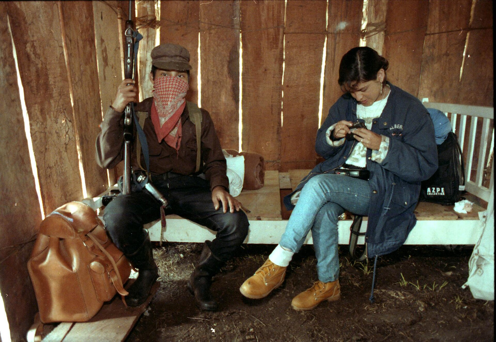

Who are the people who would actually keep showing up for this, in person, when it's hard? If there aren't any yet, name who they'd be.

The man with no face
By the end of class you'll see how one small movement in Mexico paired the slowest medium it had with the fastest one, and lived. You'll meet the communiqué, the mask that became a mirror, and a word for war fought by a swarm with no headquarters: netwar. Then you'll turn that same slow-plus-fast lens on your own cause. You go deeper Thursday. Today we dig in together.

An old word for an official dispatch, a public bulletin from a group to the world (say "kuh-MEW-nih-kay"). Governments issue dry ones. The Zapatistas issued strange, beautiful ones: part manifesto, part poem, part letter, written by a masked man named Subcomandante Marcos who wrote more like a poet than a general.
Written in the jungle. Mailed to newspapers. Typed onto the young internet by volunteers within hours. Translated and read in dozens of countries within days.
Jargon recruits the people who already agree. A list of plain human needs recruits strangers. Anyone anywhere can read "no health care, no food, no land" and feel it in their own life, even if they have never heard of Chiapas. When your survival depends on the whole world watching, you write for the stranger three countries away, not for the specialist in the room. That is why "¡Ya Basta!", just "Enough," could jump borders when a policy paper never could.
"Marcos is gay in San Francisco, Black in South Africa, a Palestinian in Israel, a Jew in Germany, a woman alone on the subway at 10pm. Marcos is every silenced, resisting minority saying ¡Ya Basta!" Subcomandante Marcos, answering reporters who asked who was behind the mask.
How the Zapatistas decide: the whole community talks a question through, sometimes for days, until everyone reaches consensus, rather than taking an order from the top. Slow on purpose.
"To lead by obeying." The leader carries out what the assembly decides. The community does not obey the leader; the leader obeys the community.
Coined by RAND analysts Arquilla and Ronfeldt: conflict waged by a swarm of small, networked groups instead of one chain of command. No general to capture. No headquarters to raid.
Scholar Harry Cleaver's name for it. One communiqué left the jungle, and within hours scattered volunteers translated it and flooded email lists, embassies, and newsrooms worldwide.
Take one pod member's cause, or grab one of these: a campus food pantrya rural bus routea river cleanupa tenants' union. Fill all four boxes, then your spokesperson reads just your ¡Ya Basta! line to the room, and we see whose lands.
Who are the people who would actually keep showing up for this, in person, when it's hard? If there aren't any yet, name who they'd be.
What is the one channel that could carry this to strangers far away, fast? Where would it spread if it spread at all?
Write one plain sentence, no jargon, that a stranger three states away could read and feel in their own life.
Whose story do you tell, and told how, so a stranger looks at it and sees themselves, more than they see you?
Work these three on your own, then we'll hear a few.